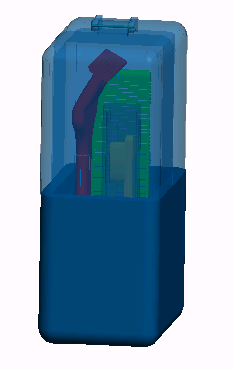

|
Products
The Tranporter
$7.99
| Our newest creation, The Transporter, is the first in our Grab and Go series.
This sleek case can fit right into your purse, backpack or pocket and it can hold all of your basic toiletries.
The unique design of the case allows for it stand upright keeping your toothbrush far from dirty countertops.
The case features dual hinges on the lid, that give it a dynamic aspect for easy access and storage.
A small notch on the front of the case acts as a lock so the case stays sealed during travel. |
Parts
Front Lid$2.99 |
Back Lid$2.99 |
Bottom$3.99 |
Pin$0.99 |
The individual parts are available for purchase if replacement is needed. |
Brush to Go  $2.99
| The Brush to Go is a great addition to The Tranporter.
We are currently having a sale where if you purchase this case you will also recieve a free Brush to Go.
|
|
|